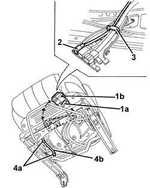
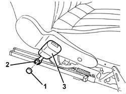

7065A14 ANCHORAGE ROD FOR , (ONE), FRONT SEAT BELT LEFT OR RIGHT - R.R.
- Path
- Procedures > 70 FITTINGS > 7065 SEAT BELTS AND ACCESSORIES > 7065A FRONT SEAT BELTS > 7065A14 ANCHORAGE ROD FOR , (ONE), FRONT SEAT BELT LEFT OR RIGHT - R.R.
- Kind
- repair procedure (removal / refitting; the operation number is the code)
- Applies to
- all engines; all production periods
- Interactive page
- https://sloeber94.github.io/elrnDB-aGt/en/#/125001986
Applies to: all engines; all production periods
 Removing
Removing
 Refitting
RefittingOp. 7045A10 L/H OR R/H FRONT SEAT (ONE) - R+R
1. Working under the seat, disconnect the retainer (1a) and turn connector carrier bracket (1b) until it is accessible.
2. Disconnect the connector from the rail-type retainer
3. Disconnect the wiring from the retainer.
4. Disconnect the retaining bands (4a) from the wiring (4b) for the seat belt anchor link.

Applies to: all engines; all production periods
1. Remove the cover.
2. Unscrew the anchorage link retaining bolt.
3. Remove the anchorage link complete with wiring

Applies to: all engines; all production periods
Refitting
RemovingCheck that the anchorage link is not damaged.
Fit the anchorage link complete with wiring
Tighten the bolt securing the anchorage link.
 | Fastening | Component | Ø | Value (daNm) |
|---|---|---|---|---|
- | Bolt | FRONT SEAT BELT BRANCH WITH ATTACHMENT BUCKLE.. . | M7/16'' | 4.0 |
Fit the cover.
Connect the seat belt anchorage link cable with the retaining bands.
Secure the wiring to the retainer.
Connect the connector to the rail-type retainer.
Turn the connector carrier bracket in its seat and engage the retainer.
Op. 7045A10 L/H OR R/H FRONT SEAT (ONE) - R+R
Check that the anchorage link and the warning light on the instrument panel are working properly.